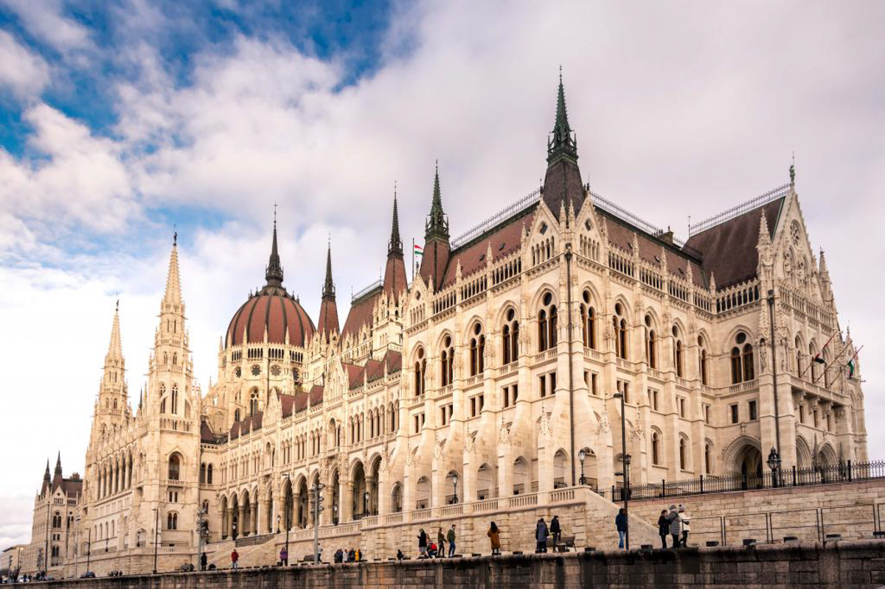
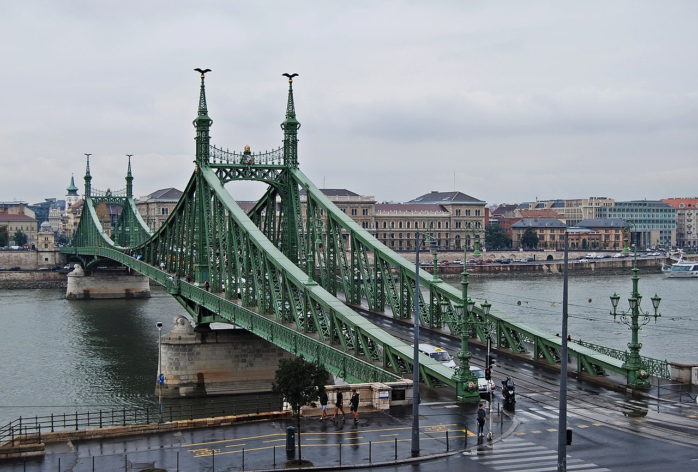
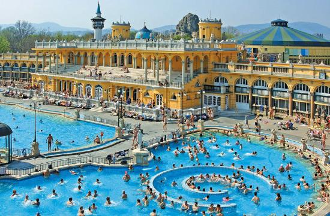
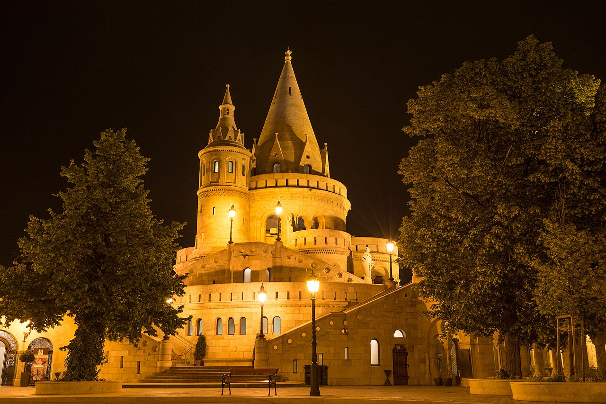

🌟 Najważniejsze atrakcje
Parlament Węgierski (Országház)
Dziedzictwo UNESCO
Architektura neogotyku

Parlament w Budapeszcie – perła nad Dunajem
Országház to jeden z najbardziej rozpoznawalnych symboli Węgier i zarazem jedna z najpiękniejszych siedzib parlamentów na świecie. Położony malowniczo nad brzegiem Dunaju, zachwyca zarówno swoją monumentalną skalą, jak i niezwykłą dbałością o detale architektoniczne.
Historia i architektura
Budowę parlamentu rozpoczęto w 1885 roku, a ukończono ją w 1904 roku, w okresie dynamicznego rozwoju Budapesztu. Projekt autorstwa Imre Steindla nawiązuje do stylu neogotyckiego, inspirowanego m.in. brytyjskim Pałacem Westminsterskim. Budynek ma imponujące rozmiary – liczy aż 268 metrów długości i 96 metrów wysokości, co symbolicznie odnosi się do roku 896, uznawanego za początek państwowości Węgier.
Wnętrza pełne przepychu
Wnętrze parlamentu jest równie imponujące jak jego zewnętrzna bryła. Znajduje się tam ponad 600 pomieszczeń, a do dekoracji użyto ogromnych ilości złota. Najważniejszym miejscem jest centralna sala pod kopułą, gdzie przechowywana jest Święta Korona Węgier – jeden z najcenniejszych symboli narodowych.
Praktyczne informacje
Turyści mogą zwiedzać wybrane części budynku z przewodnikiem i poznać jego fascynującą historię. Szczególnie spektakularnie prezentuje się nocą, kiedy jego iluminacja odbija się w wodach Dunaju, tworząc jeden z najbardziej magicznych widoków w Europie.
Most Łańcuchowy (Széchenyi lánchíd)
Symbol jedności
XIX wiek

Most Łańcuchowy w Budapeszcie – symbol jedności miasta
Most Łańcuchowy to jeden z najbardziej charakterystycznych i historycznie ważnych mostów w Budapeszcie. Łączy dwie części miasta – Budę i Peszt – przerzucony nad majestatycznym Dunajem, stanowi nie tylko ważną przeprawę, ale również ikonę stolicy Węgier.
Historia mostu
Most został otwarty w 1849 roku jako pierwszy stały most na Dunaju w Budapeszcie. Jego budowa była ogromnym krokiem naprzód dla rozwoju miasta, umożliwiając całoroczne połączenie obu brzegów rzeki. Inicjatorem projektu był hrabia István Széchenyi, jeden z najważniejszych reformatorów w historii Węgier.
Niestety, podczas II wojny światowej most został niemal całkowicie zniszczony. Odbudowano go jednak z wielką starannością i ponownie otwarto dokładnie sto lat po inauguracji – w 1949 roku.
Architektura i detale
Most Łańcuchowy zachwyca swoją elegancką konstrukcją wiszącą. Jego nazwa pochodzi od charakterystycznych żelaznych łańcuchów, które podtrzymują konstrukcję. Na obu końcach mostu stoją monumentalne kamienne lwy – jedne z najbardziej rozpoznawalnych rzeźb w Budapeszcie.
Most dziś
Spacer po nim to obowiązkowy punkt każdej wizyty w Budapeszcie – szczególnie o zachodzie słońca lub nocą, gdy most jest pięknie oświetlony. Z jego środka rozciąga się jeden z najpiękniejszych widoków na miasto – z jednej strony wzgórza Budy, z drugiej tętniący życiem Peszt.
Kąpieliska termalne
Zdrowie i relaks
Tradycja osmańska

Kąpieliska termalne w Budapeszcie – relaks w sercu miasta
Budapeszt nie bez powodu nazywany jest „stolicą term". Pod miastem znajdują się setki gorących źródeł, które od wieków zasilają słynne kąpieliska. To jedno z niewielu miejsc w Europie, gdzie można zanurzyć się w naturalnie ciepłych wodach niemal w samym centrum wielkiej metropolii.
Széchenyi Thermal Bath – największe kąpielisko Europy
To najbardziej znane kąpielisko w mieście i jednocześnie jedno z największych kompleksów termalnych w Europie. Znajduje się w Parku Miejskim i zachwyca charakterystyczną, żółtą neobarokową architekturą. Na odwiedzających czekają liczne baseny z wodą termalną o różnych temperaturach, a także baseny zewnętrzne, które są szczególnie popularne zimą.
Gellért Baths – elegancja secesji
Kąpielisko Gellért uchodzi za jedno z najpiękniejszych w Europie. Wyróżnia się wnętrzami w stylu secesyjnym – mozaiki, kolumny i kolorowe witraże tworzą atmosferę luksusowego spa sprzed ponad wieku. To idealne miejsce dla osób, które oprócz relaksu chcą poczuć klimat historycznej elegancji.
Rudas Baths – tradycja i panorama miasta
Rudas to jedno z najstarszych kąpielisk w Budapeszcie, sięgające czasów osmańskich. Charakterystyczna turecka kopuła i historyczne łaźnie nadają mu wyjątkowy klimat. Dodatkową atrakcją jest nowoczesny basen na dachu, z którego rozciąga się spektakularny widok na Dunaj i panoramę miasta.
Wzgórze Zamkowe i Baszta Rybacka
Panorama miasta
Dziedzictwo UNESCO

Wzgórze Zamkowe to historyczne serce Budy i jeden z najważniejszych kompleksów zabytkowych w Europie Środkowej, wpisany na listę Dziedzictwa UNESCO.
Baszta Rybacka (Halászbástya)
Zbudowana na przełomie XIX i XX wieku baszta to jeden z najbardziej fotografowanych punktów widokowych w Budapeszcie. Jej siedem wież symbolizuje siedem plemion węgierskich, które skolonizowały Kotlinę Karpacką. Z tarasu rozciąga się spektakularny widok na Parlament i Dunaj.
Zamek Królewski (Budavári Palota)
Monumentalna rezydencja węgierskich królów mieści dziś Węgierską Galerię Narodową i Muzeum Historyczne Budapesztu. Kompleks był wielokrotnie przebudowywany przez wieki, a jego obecna forma pochodzi z XVIII i XIX stulecia.
Kościół Macieja (Mátyás-templom)
Neogotycka świątynia z kolorowymi dachówkami to jeden z symboli Budy. Przez wieki była miejscem koronacji węgierskich królów. Wewnątrz zachowały się piękne malowidła ścienne i witraże.
Jak dotrzeć?
Na Wzgórze Zamkowe można dostać się historyczną kolejką linową (Budavári Sikló) z nabrzeża Dunaju, co samo w sobie jest atrakcją turystyczną.
Ruin bary i dzielnica żydowska
Życie nocne
Kultura i historia

Dzielnica VII (Erzsébetváros) – dawna dzielnica żydowska Budapesztu – jest dziś centrum tętniącego życia nocnego i kulturalnego miasta.
Szimpla Kert – kultowy ruin bar
Największy i najsłynniejszy ruin bar na świecie. Urządzony w opuszczonej fabryce, wypełniony jest kolorowymi dekoracjami, starymi meblami i dziełami sztuki. Każde pomieszczenie ma inny charakter. W ciągu dnia funkcjonuje jako targ, kawiarnia i przestrzeń kulturalna.
Historia dzielnicy żydowskiej
Przed II wojną światową Budapeszt miał jedną z największych społeczności żydowskich w Europie. Synagoga na ulicy Dohány – największa w Europie – to dziś jedno z ważniejszych miejsc pamięci i centrum kulturalnym. Warto odwiedzić też pobliskie Muzeum Żydowskie.
Klimat i atmosfera
Dzielnica tętni życiem przez cały rok – od festiwali muzycznych przez wystawy sztuki po wyśmienite restauracje i kawiarnie. Ruin bary wpisały się na stałe w kulturalny krajobraz Budapesztu i stały się wzorem dla podobnych miejsc w całej Europie.